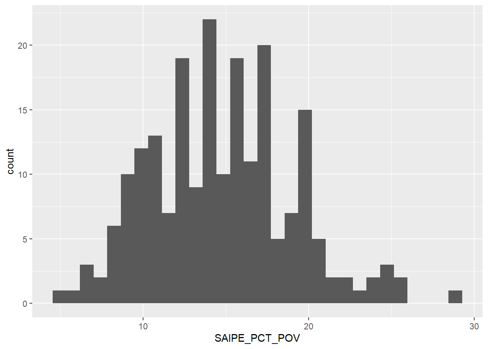

Code
library(tidyverse)
library(readxl)
library(corrplot)Error in library(corrplot): there is no package called 'corrplot'Code
knitr::opts_chunk$set(echo = TRUE)Caleb Hill
October 2, 2022
Multiple research reports state that there is a relationship between re-hospitalization rates and social characteristics, such as demographic and economic identifiers, (Barnett, Hsu & McWilliams, 2015; Murray, Allen, Clark, Daly & Jacobs, 2021). Specifically, racial characteristics play a large role in predicting re-hospitalization in a population (Li, Cai & Glance, 2015). While some articles examine economic and health factors contributing to these disparities, very few dig deep into environmental factors that influence this phenomenon, (Spatz, Bernheim, Horwitz & Herrin, 2020). With your zipcode affecting up to 60% of your health outcomes, this research is relevant to better improving one of our most costly health expenditures: hospitalization.
This paper aims to explore how different environmental variables impact re-hospitalization rates on a county-by-county level, controlling for racial, ethnic, and sex variables (maybe). These environmental factors will include both common environmental concerns, such as heat index, average temperature, precipitation, and natural disasters, along with the built environment, population density.
The data-set chosen for this analysis is taken from the Agency for Healthcare Research and Quality, Social Determinants of Health (SDOH) Database. This data-set has over 300 variables to explore each SDOH domain: social context, economic context, education, healthcare, and the environment. We shall pull data from three of these five domains: social, economic, and environmental.
To further reduce data bloat, we shall limit the geographic review to Texas counties – my home state! That should provide us with 200+ observations.
The hypothesis for this research report is: *Environmental factors increase rates of re-hospitalization in Texas counties.
Therefore, the null hypothesis is: *Environmental factors do not increase rates of re-hospitalization in Texas counties.
Multiple regression analyses shall be employed to determine the relationship – or lack thereof – between these variables.
First I’ll import the relevant libraries.
Error in library(corrplot): there is no package called 'corrplot'Then I’ll import the dataset and view the first six rows.
Warning: Expecting logical in OA1673 / R1673C391: got '46123'Warning: Expecting logical in OA1765 / R1765C391: got '32510'Warning: Expecting logical in OB1765 / R1765C392: got '41025'Warning: Expecting logical in OC1765 / R1765C393: got '41037'Warning: Expecting logical in OA2799 / R2799C391: got '49017'Warning: Expecting logical in OB2799 / R2799C392: got '49019'Warning: Expecting logical in OC2799 / R2799C393: got '49025'Warning: Expecting logical in OD2799 / R2799C394: got '49055'Warning: Expecting logical in OA2844 / R2844C391: got '51760'# A tibble: 6 × 685
YEAR COUNTYFIPS STATEFIPS STATE COUNTY REGION TERRI…¹ ACS_T…² ACS_T…³ ACS_T…⁴
<dbl> <chr> <chr> <chr> <chr> <chr> <dbl> <dbl> <dbl> <dbl>
1 2020 01001 01 Alab… Autau… South 0 55639 54929 52404
2 2020 01003 01 Alab… Baldw… South 0 218289 216518 206329
3 2020 01005 01 Alab… Barbo… South 0 25026 24792 23694
4 2020 01007 01 Alab… Bibb … South 0 22374 22073 21121
5 2020 01009 01 Alab… Bloun… South 0 57755 57164 54250
6 2020 01011 01 Alab… Bullo… South 0 10173 10143 9579
# … with 675 more variables: ACS_TOT_POP_ABOVE15 <dbl>,
# ACS_TOT_POP_ABOVE16 <dbl>, ACS_TOT_POP_16_19 <dbl>,
# ACS_TOT_POP_ABOVE25 <dbl>, ACS_TOT_CIVIL_POP_ABOVE18 <dbl>,
# ACS_TOT_CIVIL_VET_POP_ABOVE25 <dbl>, ACS_TOT_OWN_CHILD_BELOW17 <dbl>,
# ACS_TOT_WORKER_NWFH <dbl>, ACS_TOT_WORKER_HH <dbl>,
# ACS_TOT_CIVILIAN_LABOR <dbl>, ACS_TOT_CIVIL_EMPLOY_POP <dbl>,
# ACS_TOT_POP_POV <dbl>, ACS_TOT_CIVIL_NONINST_POP_POV <dbl>, …Next I want to verify the class is a dataframe. Otherwise, I’ll need to transform the data to make it easier to work with.
All good here.
Now on to data transformation. We will need to select only the relevant columns for this analysis and filter by Texas, bringing the observations (rows) down to 254.
df_new <- df %>%
select(COUNTYFIPS,
STATE,
COUNTY,
ACS_TOT_POP_WT,
ACS_PCT_MALE,
ACS_PCT_FEMALE,
ACS_PCT_AIAN,
ACS_PCT_ASIAN,
ACS_PCT_BLACK,
ACS_PCT_HISPANIC,
ACS_PCT_MULT_RACE,
ACS_PCT_NHPI,
ACS_PCT_OTHER_RACE,
ACS_PCT_WHITE,
CEN_POPDENSITY_COUNTY,
NEPHTN_HEATIND_105,
NOAAC_AVG_TEMP_YEARLY,
NOAAC_PRECIPITATION_AVG_YEARLY,
NOAAS_TOT_NATURAL_DISASTERS,
SAIPE_MEDIAN_HH_INCOME,
SAIPE_PCT_POV,
LTC_AVG_OBS_REHOSP_RATE) %>%
filter(STATE == "Texas")
head(df_new)# A tibble: 6 × 22
COUNTYF…¹ STATE COUNTY ACS_T…² ACS_P…³ ACS_P…⁴ ACS_P…⁵ ACS_P…⁶ ACS_P…⁷ ACS_P…⁸
<chr> <chr> <chr> <dbl> <dbl> <dbl> <dbl> <dbl> <dbl> <dbl>
1 48001 Texas Ander… 57917 61.2 38.8 0.41 0.6 20.9 17.9
2 48003 Texas Andre… 18227 49.6 50.4 0 0.31 2.29 56.9
3 48005 Texas Angel… 87119 48.9 51.1 0.31 1.11 15.1 22.3
4 48007 Texas Arans… 24220 49.5 50.5 0.9 1.14 0.33 28.0
5 48009 Texas Arche… 8754 50.2 49.8 1.46 0.17 1.1 8.21
6 48011 Texas Armst… 1950 45.7 54.3 0.77 0 0.72 8.46
# … with 12 more variables: ACS_PCT_MULT_RACE <dbl>, ACS_PCT_NHPI <dbl>,
# ACS_PCT_OTHER_RACE <dbl>, ACS_PCT_WHITE <dbl>, CEN_POPDENSITY_COUNTY <dbl>,
# NEPHTN_HEATIND_105 <dbl>, NOAAC_AVG_TEMP_YEARLY <dbl>,
# NOAAC_PRECIPITATION_AVG_YEARLY <dbl>, NOAAS_TOT_NATURAL_DISASTERS <dbl>,
# SAIPE_MEDIAN_HH_INCOME <dbl>, SAIPE_PCT_POV <dbl>,
# LTC_AVG_OBS_REHOSP_RATE <dbl>, and abbreviated variable names ¹COUNTYFIPS,
# ²ACS_TOT_POP_WT, ³ACS_PCT_MALE, ⁴ACS_PCT_FEMALE, ⁵ACS_PCT_AIAN, …Out of 300+ variables, we’ve whittled them down to 22. Of those 22, we have three (3) that are unique identifiers (FIPS, State, and County), 11 that are potential control variables (population, gender, and race / ethnicity), and eight (8) that we can explore (Population Density to Re-hospitalization Rate).
Before we launch into exploring these eight variables via descriptive statistics, first we need to determine where the NAs are and see if any of the variables will have a substantial amount of missing data.
COUNTYFIPS STATE
0 0
COUNTY ACS_TOT_POP_WT
0 0
ACS_PCT_MALE ACS_PCT_FEMALE
0 0
ACS_PCT_AIAN ACS_PCT_ASIAN
0 0
ACS_PCT_BLACK ACS_PCT_HISPANIC
0 0
ACS_PCT_MULT_RACE ACS_PCT_NHPI
0 0
ACS_PCT_OTHER_RACE ACS_PCT_WHITE
0 0
CEN_POPDENSITY_COUNTY NEPHTN_HEATIND_105
0 0
NOAAC_AVG_TEMP_YEARLY NOAAC_PRECIPITATION_AVG_YEARLY
0 0
NOAAS_TOT_NATURAL_DISASTERS SAIPE_MEDIAN_HH_INCOME
0 0
SAIPE_PCT_POV LTC_AVG_OBS_REHOSP_RATE
0 44 This is not ideal, as that’s our dependent variable. However, 44 / 254 is not bad. That still leaves us with plenty of counties to review.
# A tibble: 210 × 22
COUNTYFIPS STATE COUNTY ACS_TOT_POP_WT ACS_PCT_MALE ACS_PCT_FEMALE
<chr> <chr> <chr> <dbl> <dbl> <dbl>
1 48001 Texas Anderson County 57917 61.2 38.8
2 48003 Texas Andrews County 18227 49.6 50.4
3 48005 Texas Angelina County 87119 48.9 51.1
4 48007 Texas Aransas County 24220 49.5 50.5
5 48011 Texas Armstrong County 1950 45.7 54.3
6 48013 Texas Atascosa County 50194 50.2 49.8
7 48015 Texas Austin County 29892 49.9 50.1
8 48017 Texas Bailey County 6916 50.0 50.0
9 48019 Texas Bandera County 22770 49.8 50.2
10 48021 Texas Bastrop County 86839 50.8 49.2
ACS_PCT_AIAN ACS_PCT_ASIAN ACS_PCT_BLACK ACS_PCT_HISPANIC ACS_PCT_MULT_RACE
<dbl> <dbl> <dbl> <dbl> <dbl>
1 0.41 0.6 20.9 17.9 4.46
2 0 0.31 2.29 56.9 5.76
3 0.31 1.11 15.1 22.3 3.21
4 0.9 1.14 0.33 28.0 6.2
5 0.77 0 0.72 8.46 5.33
6 0.08 0.5 1.08 64.7 11.4
7 0.14 0.55 8.77 27.2 2.96
8 1 0.68 0.29 65.8 0.49
9 1.2 0.34 0.75 19.3 5.97
10 0.53 0.84 7.83 38.8 6.98
ACS_PCT_NHPI ACS_PCT_OTHER_RACE ACS_PCT_WHITE CEN_POPDENSITY_COUNTY
<dbl> <dbl> <dbl> <dbl>
1 0.02 2.35 71.2 54.5
2 0.14 10.2 81.2 12.2
3 0.01 2.78 77.4 109.
4 0 3.57 87.9 96.1
5 0 1.59 91.6 2.14
6 0 2.2 84.8 41.2
7 0 12.1 75.5 46.2
8 0 4.38 93.2 8.36
9 0 2.7 89.0 28.8
10 0 18.4 65.4 97.8
NEPHTN_HEATIND_105 NOAAC_AVG_TEMP_Y…¹ NOAAC…² NOAAS…³ SAIPE…⁴ SAIPE…⁵ LTC_A…⁶
<dbl> <dbl> <dbl> <dbl> <dbl> <dbl> <dbl>
1 28 66.5 4.36 46 50879 20.9 0.21
2 0 64.6 0.595 26 76600 9.2 0.2
3 26 67.6 4.05 15 49943 17 0.18
4 7 73.2 2.24 36 51461 17.1 0.09
5 0 60.6 1.09 90 62256 9.3 0.33
6 47 71.8 2.09 38 60594 14.9 0.16
7 33 70.4 3.41 19 60593 11.4 0.08
8 0 59.6 0.692 38 48259 14.4 0
9 7 68.2 2.03 29 64389 11 0.08
10 44 70.0 2.89 30 74612 10.8 0.14
# … with 200 more rows, and abbreviated variable names ¹NOAAC_AVG_TEMP_YEARLY, ²NOAAC_PRECIPITATION_AVG_YEARLY, ³NOAAS_TOT_NATURAL_DISASTERS, ⁴SAIPE_MEDIAN_HH_INCOME, ⁵SAIPE_PCT_POV, ⁶LTC_AVG_OBS_REHOSP_RATE210 x 22 is a good place to start. We’ll need to re-do this step for the descriptive statistics section, but we can carry over this object when we fit the linear models.
For our preliminary analysis, we’re going to provide summary statistics analyzing the 8 variables relevant to our research question, from Population Density to the end of the data-set, and a visualization for each. Re-hospitalization rates will be the dependent variable in future models, with the 11 demographic variables as potential controls for the regression(s).
CEN_POPDENSITY_COUNTY NEPHTN_HEATIND_105 NOAAC_AVG_TEMP_YEARLY
Min. : 0.78 Min. : 0.00 Min. :56.52
1st Qu.: 12.53 1st Qu.: 7.00 1st Qu.:64.89
Median : 30.48 Median :24.00 Median :66.53
Mean : 143.53 Mean :22.14 Mean :67.06
3rd Qu.: 78.46 3rd Qu.:34.00 3rd Qu.:69.71
Max. :3003.99 Max. :59.00 Max. :76.47
NOAAC_PRECIPITATION_AVG_YEARLY NOAAS_TOT_NATURAL_DISASTERS
Min. :0.4583 Min. : 0.00
1st Qu.:1.6135 1st Qu.: 14.25
Median :2.5933 Median : 28.50
Mean :2.7027 Mean : 32.75
3rd Qu.:3.8808 3rd Qu.: 40.00
Max. :5.4558 Max. :186.00
SAIPE_MEDIAN_HH_INCOME SAIPE_PCT_POV LTC_AVG_OBS_REHOSP_RATE
Min. : 33513 Min. : 4.80 Min. :0.0000
1st Qu.: 48455 1st Qu.:11.45 1st Qu.:0.1100
Median : 54536 Median :14.50 Median :0.1500
Mean : 57028 Mean :14.75 Mean :0.1528
3rd Qu.: 61901 3rd Qu.:17.40 3rd Qu.:0.2000
Max. :106225 Max. :28.70 Max. :1.0000 We see quite a number of counties have a low population density. This is no surprise, as over 80% of counties in Texas are labeled as “rural” by multiple federal agencies – dependent upon low population density.
This is further attested and we see a wide range between this variable’s median (21.8) and mean (119.4). Lots of out-liers. If we had a urban/rural classification code, we could filter on only rural counties to help mitigate this spread. I may need to merge a data-set due to this wide range.
Texas is a hot state, and this visualization is evidence of that. The median number of days Texas’ counties experience a heat index of over 105F each year is 20 days per year. One county even reached 59 days!
`stat_bin()` using `bins = 30`. Pick better value with `binwidth`.The data-set has a very normal distribution, centered around the 25/30 mark – if the number of counties at 0 were removed. Yet because that’s not so, this variable has a sharp bimodal distribution. We may have to separate the data into two bins: those with less than 10 days over 105F and those with more than 10 days over 105F. That’s yet to be determined.
`stat_bin()` using `bins = 30`. Pick better value with `binwidth`.There’s a good distribution. Average temperature each month is between 65 to 67 for most of the counties. The range (20) is also fairly small for a state with such a large area and multiple climates within its borders.
Average precipitation each month is fairly uniform, with the mean at 2.5 inches of rain, on average, each month. This variable will most likely provide less variation in the analysis compared to others, such as population density and heat index. This can be both a good and a bad thing, as variations in precipitation was one of the variables I was most interested in exploring for this project. Oh well.
Many high out-liers over 75. Let’s plot a histogram to get a better look at the data’s distribution.
`stat_bin()` using `bins = 30`. Pick better value with `binwidth`.A right skewed variable, with observations dropping off dramatically once we reach 50 total recorded natural disasters.
`stat_bin()` using `bins = 30`. Pick better value with `binwidth`.A couple of high out-liers, hovering around $90,000+ in median household income, but the mean holds at $57,291.
`stat_bin()` using `bins = 30`. Pick better value with `binwidth`.
Another close to normal distribution. Most counties have poverty rates ranging from 10% to 20%. There are of course out-liers, especially a good number below 10%, but those are rare.
`stat_bin()` using `bins = 30`. Pick better value with `binwidth`.Another right skewed variable. Lots of counties with 0.00 rates of re-hospitalization, and few, if any, above 0.25 per 100,000 people. From a health perspective, this is good news! From a research perspective, that’s going to make analysis a little trickier. However, the somewhat normal and/or bimodal distribution should be fairly easy to work with, needing little to no transformation for a linear regression.
Finally, let’s plot a brief correlation matrix to see if there’s any relationships we can explore as a simple linear regression in the next section.
Error in corrplot(., is.corr = FALSE, method = "number", tl.cex = 0.4): could not find function "corrplot"The closer a box is to 1, the higher the correlation. Not particularly exciting news, as it shows there’s not a high correlation between re-hospitalization rates and any of the explanatory variables. This may throw a kink in our analysis – and explain why others haven’t delved deeply into this research!
Perhaps this step should have been completed first, but nonetheless, we shall continue on with the report. I may pull two more environmental variables, to see if we can find a correlation somewhere. Even so, the sum total of all environmental variables might contribute to re-hospitalization rates as well. I’m just not sure if that – along with control variables – is outside the scope of this report.
For Part 2, I’d like to rename the variables to more digestible phrases, and I would like to overhaul the code outputs, to make the tables and visualizations a little easier on the eyes. That’s just polish work, though, and won’t affect the analysis.
Looking over the Spatz et. al. (2020) article again, the two most significant Built Environment variables (with the highest R2 value) are 1) Long Commute, Driving Alone and 2) Severe Housing Problems. I’m going to scour the SDOH data-set to see what relevant variables match these two and add them into Part 2.
Barnett, M., Hsu, J. & McWilliams, M. (2015). “Patient Characteristics and Differences in Hospital Readmission Rates.” JAMA Intern Med., 175(11): 1803-1812.
Li, Y., Cai, X. & Glance, L. (2015). “Disparities in 30-day rehospitalization rates among Medicare skilled nursing facility residents by race and site of care.” Med Care, 53(12): 1058-1065.
Murray, F., Allen, M., Clark, C., Daly, C. & Jacobs, D. (2021). “Socio-demographic and -economic factors associated with 30-day readmission for conditions targeted by the hospital readmissions reduction program: a population-based study.” BMC Public Health, 21.
Spatz, E., Bernheim, S., Horwitz, L. & Herrin, J. (2020). Community factors and hospital wide readmission rates: Does context matter? PLoS One, 15(10).
---
title: "Final Part 1"
author: "Caleb Hill"
desription: "Part 1 of the Final Project"
date: "10/02/2022"
format:
html:
toc: true
code-fold: true
code-copy: true
code-tools: true
categories:
- finalpart1
- caleb.hill
---
## Introduction, Research Question, and Hypothesis
Multiple research reports state that there is a relationship between re-hospitalization rates and social characteristics, such as demographic and economic identifiers, (Barnett, Hsu & McWilliams, 2015; Murray, Allen, Clark, Daly & Jacobs, 2021). Specifically, racial characteristics play a large role in predicting re-hospitalization in a population (Li, Cai & Glance, 2015). While some articles examine economic and health factors contributing to these disparities, very few dig deep into environmental factors that influence this phenomenon, (Spatz, Bernheim, Horwitz & Herrin, 2020). With your zipcode affecting up to 60% of your health outcomes, this research is relevant to better improving one of our most costly health expenditures: hospitalization.
This paper aims to explore how different environmental variables impact re-hospitalization rates on a county-by-county level, controlling for racial, ethnic, and sex variables (maybe). These environmental factors will include both common environmental concerns, such as heat index, average temperature, precipitation, and natural disasters, along with the built environment, population density.
The data-set chosen for this analysis is taken from the Agency for Healthcare Research and Quality, Social Determinants of Health (SDOH) Database. This data-set has over 300 variables to explore each SDOH domain: social context, economic context, education, healthcare, and the environment. We shall pull data from three of these five domains: social, economic, and environmental.
To further reduce data bloat, we shall limit the geographic review to Texas counties -- my home state! That should provide us with 200+ observations.
The hypothesis for this research report is: \*Environmental factors increase rates of re-hospitalization in Texas counties.
Therefore, the null hypothesis is: \*Environmental factors do not increase rates of re-hospitalization in Texas counties.
Multiple regression analyses shall be employed to determine the relationship -- or lack thereof -- between these variables.
First I'll import the relevant libraries.
```{r}
#| label: setup
#| warning: false
library(tidyverse)
library(readxl)
library(corrplot)
knitr::opts_chunk$set(echo = TRUE)
```
Then I'll import the dataset and view the first six rows.
```{r}
df <- SDOH_2020_COUNTY_1_0 <- read_excel("_data/SDOH_2020_COUNTY_1_0.xlsx", sheet = "Data")
head(df)
```
Next I want to verify the class is a dataframe. Otherwise, I'll need to transform the data to make it easier to work with.
```{r}
class(df)
```
All good here.
Now on to data transformation. We will need to select only the relevant columns for this analysis and filter by Texas, bringing the observations (rows) down to 254.
```{r}
df_new <- df %>%
select(COUNTYFIPS,
STATE,
COUNTY,
ACS_TOT_POP_WT,
ACS_PCT_MALE,
ACS_PCT_FEMALE,
ACS_PCT_AIAN,
ACS_PCT_ASIAN,
ACS_PCT_BLACK,
ACS_PCT_HISPANIC,
ACS_PCT_MULT_RACE,
ACS_PCT_NHPI,
ACS_PCT_OTHER_RACE,
ACS_PCT_WHITE,
CEN_POPDENSITY_COUNTY,
NEPHTN_HEATIND_105,
NOAAC_AVG_TEMP_YEARLY,
NOAAC_PRECIPITATION_AVG_YEARLY,
NOAAS_TOT_NATURAL_DISASTERS,
SAIPE_MEDIAN_HH_INCOME,
SAIPE_PCT_POV,
LTC_AVG_OBS_REHOSP_RATE) %>%
filter(STATE == "Texas")
head(df_new)
```
Out of 300+ variables, we've whittled them down to 22. Of those 22, we have three (3) that are unique identifiers (FIPS, State, and County), 11 that are potential control variables (population, gender, and race / ethnicity), and eight (8) that we can explore (Population Density to Re-hospitalization Rate).
Before we launch into exploring these eight variables via descriptive statistics, first we need to determine where the NAs are and see if any of the variables will have a substantial amount of missing data.
```{r}
colSums(is.na(df_new))
```
This is not ideal, as that's our dependent variable. However, 44 / 254 is not bad. That still leaves us with plenty of counties to review.
```{r}
df_new %>%
drop_na() %>%
print(nrow(df_new))
```
210 x 22 is a good place to start. We'll need to re-do this step for the descriptive statistics section, but we can carry over this object when we fit the linear models.
## Descriptive Statistics
For our preliminary analysis, we're going to provide summary statistics analyzing the 8 variables relevant to our research question, from Population Density to the end of the data-set, and a visualization for each. Re-hospitalization rates will be the dependent variable in future models, with the 11 demographic variables as potential controls for the regression(s).
```{r}
data <- df_new %>%
select(CEN_POPDENSITY_COUNTY,
NEPHTN_HEATIND_105,
NOAAC_AVG_TEMP_YEARLY,
NOAAC_PRECIPITATION_AVG_YEARLY,
NOAAS_TOT_NATURAL_DISASTERS,
SAIPE_MEDIAN_HH_INCOME,
SAIPE_PCT_POV,
LTC_AVG_OBS_REHOSP_RATE) %>%
drop_na()
summary(data)
```
### Population Density
```{r}
ggplot(data, aes(CEN_POPDENSITY_COUNTY)) +
geom_histogram(binwidth = 50)
```
We see quite a number of counties have a low population density. This is no surprise, as over 80% of counties in Texas are labeled as "rural" by multiple federal agencies -- dependent upon low population density.
This is further attested and we see a wide range between this variable's median (21.8) and mean (119.4). Lots of out-liers. If we had a urban/rural classification code, we could filter on only rural counties to help mitigate this spread. I may need to merge a data-set due to this wide range.
### Heat Index Over 105F
```{r}
ggplot(data, aes(NEPHTN_HEATIND_105)) +
geom_boxplot()
```
Texas is a hot state, and this visualization is evidence of that. The median number of days Texas' counties experience a heat index of over 105F each year is 20 days per year. One county even reached 59 days!
```{r}
ggplot(data, aes(NEPHTN_HEATIND_105)) +
geom_histogram()
```
The data-set has a very normal distribution, centered around the 25/30 mark -- if the number of counties at 0 were removed. Yet because that's not so, this variable has a sharp bimodal distribution. We may have to separate the data into two bins: those with less than 10 days over 105F and those with more than 10 days over 105F. That's yet to be determined.
### Average Yearly Temperature
```{r}
ggplot(data, aes(NOAAC_AVG_TEMP_YEARLY)) +
geom_histogram()
```
There's a good distribution. Average temperature each month is between 65 to 67 for most of the counties. The range (20) is also fairly small for a state with such a large area and multiple climates within its borders.
### Average Yearly Precipitation
```{r}
ggplot(data, aes(NOAAC_PRECIPITATION_AVG_YEARLY)) +
geom_boxplot()
```
Average precipitation each month is fairly uniform, with the mean at 2.5 inches of rain, on average, each month. This variable will most likely provide less variation in the analysis compared to others, such as population density and heat index. This can be both a good and a bad thing, as variations in precipitation was one of the variables I was most interested in exploring for this project. Oh well.
### Total Natural Disasters
```{r}
ggplot(data, aes(NOAAS_TOT_NATURAL_DISASTERS)) +
geom_boxplot()
```
Many high out-liers over 75. Let's plot a histogram to get a better look at the data's distribution.
```{r}
ggplot(data, aes(NOAAS_TOT_NATURAL_DISASTERS)) +
geom_histogram()
```
A right skewed variable, with observations dropping off dramatically once we reach 50 total recorded natural disasters.
### Median Household Income
```{r}
ggplot(data, aes(SAIPE_MEDIAN_HH_INCOME)) +
geom_histogram()
```
A couple of high out-liers, hovering around \$90,000+ in median household income, but the mean holds at \$57,291.
### Percent in Poverty
```{r}
ggplot(data, aes(SAIPE_PCT_POV)) +
geom_histogram()
```
Another close to normal distribution. Most counties have poverty rates ranging from 10% to 20%. There are of course out-liers, especially a good number below 10%, but those are rare.
### Re-hospitalization Rate
```{r}
ggplot(data, aes(LTC_AVG_OBS_REHOSP_RATE)) + geom_histogram()
```
Another right skewed variable. Lots of counties with 0.00 rates of re-hospitalization, and few, if any, above 0.25 per 100,000 people. From a health perspective, this is good news! From a research perspective, that's going to make analysis a little trickier. However, the somewhat normal and/or bimodal distribution should be fairly easy to work with, needing little to no transformation for a linear regression.
### Correlation
Finally, let's plot a brief correlation matrix to see if there's any relationships we can explore as a simple linear regression in the next section.
```{r}
data %>%
cor(data) %>%
corrplot(is.corr = FALSE, method="number", tl.cex = .4)
```
The closer a box is to 1, the higher the correlation. Not particularly exciting news, as it shows there's not a high correlation between re-hospitalization rates and any of the explanatory variables. This may throw a kink in our analysis -- and explain why others haven't delved deeply into this research!
Perhaps this step should have been completed first, but nonetheless, we shall continue on with the report. I may pull two more environmental variables, to see if we can find a correlation somewhere. Even so, the sum total of all environmental variables might contribute to re-hospitalization rates as well. I'm just not sure if that -- along with control variables -- is outside the scope of this report.
For Part 2, I'd like to rename the variables to more digestible phrases, and I would like to overhaul the code outputs, to make the tables and visualizations a little easier on the eyes. That's just polish work, though, and won't affect the analysis.
Looking over the Spatz et. al. (2020) article again, the two most significant Built Environment variables (with the highest R2 value) are 1) Long Commute, Driving Alone and 2) Severe Housing Problems. I'm going to scour the SDOH data-set to see what relevant variables match these two and add them into Part 2.
## References
Barnett, M., Hsu, J. & McWilliams, M. (2015). "Patient Characteristics and Differences in Hospital Readmission Rates." JAMA Intern Med., 175(11): 1803-1812.
Li, Y., Cai, X. & Glance, L. (2015). "Disparities in 30-day rehospitalization rates among Medicare skilled nursing facility residents by race and site of care." Med Care, 53(12): 1058-1065.
Murray, F., Allen, M., Clark, C., Daly, C. & Jacobs, D. (2021). "Socio-demographic and -economic factors associated with 30-day readmission for conditions targeted by the hospital readmissions reduction program: a population-based study." BMC Public Health, 21.
Spatz, E., Bernheim, S., Horwitz, L. & Herrin, J. (2020). Community factors and hospital wide readmission rates: Does context matter? PLoS One, 15(10).